Viaggi in Abruzzo – Percorsi tematici
Una vetrina di percorsi per esplorare l’Abruzzo. Scegli un tema oppure usa i filtri per orientarti. Gli ambiti territoriali li trovi dentro ogni percorso.
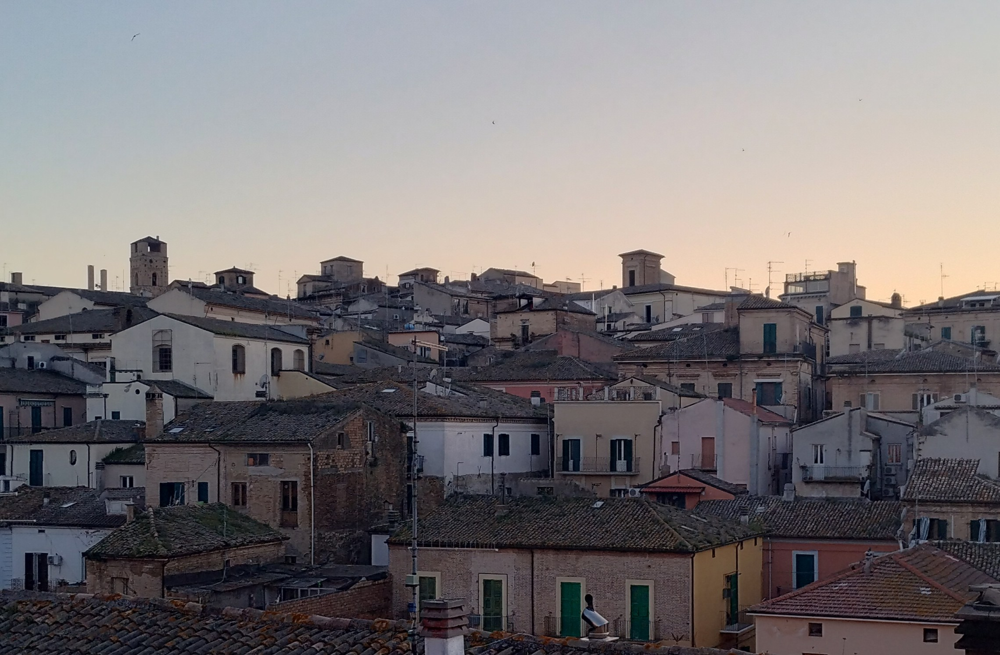
Città e borghi
Centri storici, scorci e luoghi da vivere con calma.
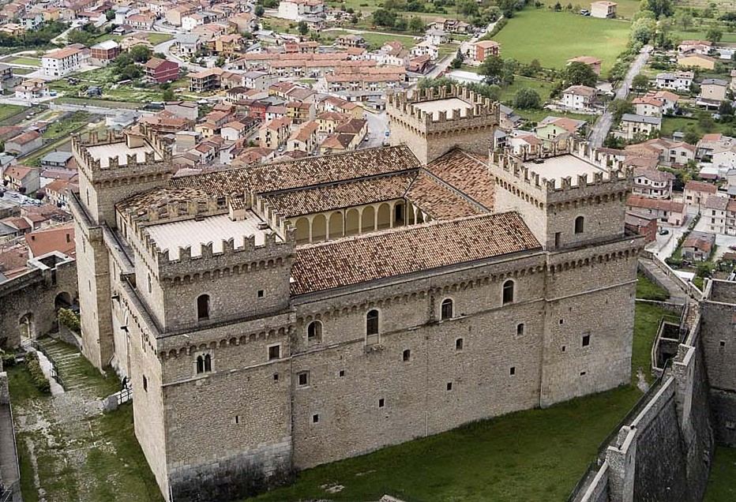
Castelli
Rocche, fortificazioni e panorami d’altura.
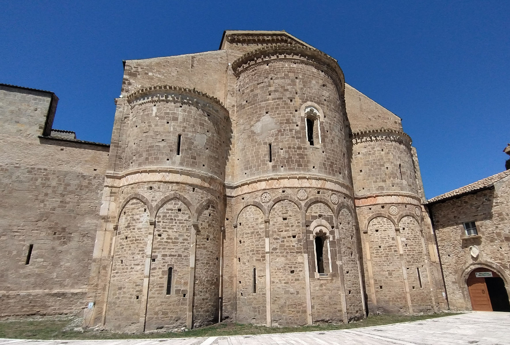
Medievale
Borghi, torri e tracce di un Abruzzo antico.
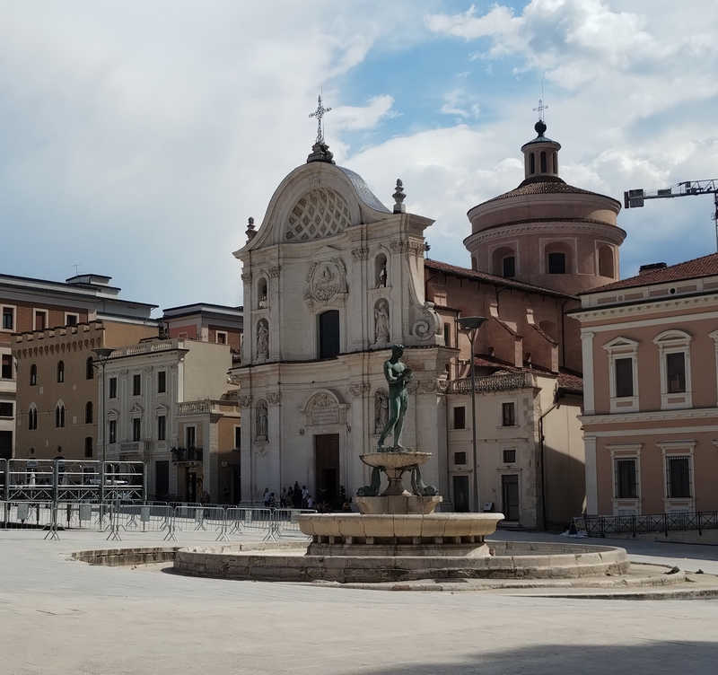
Barocco
Chiese, facciate e dettagli tra Seicento e Settecento.
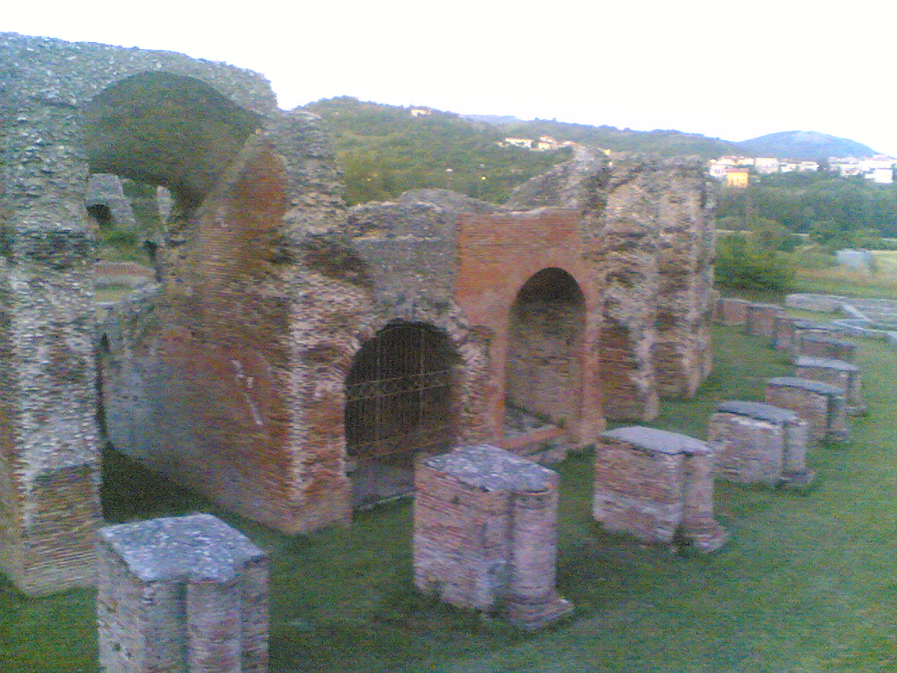
Archeologico
Siti, musei e testimonianze del mondo antico.
Dannunziano
Luoghi e memorie legati a d’Annunzio e al Novecento.
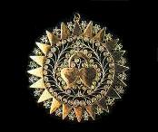
Artigianato
Mestieri, botteghe e saperi del territorio.
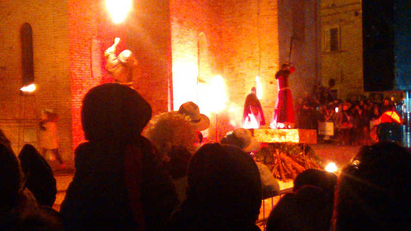
Eventi & tradizioni
Riti, feste e appuntamenti identitari.
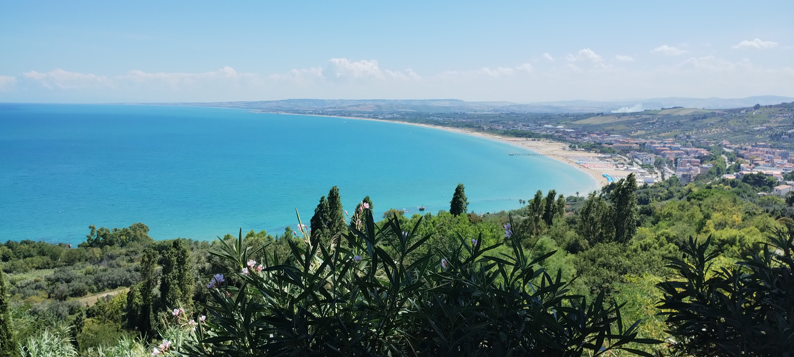
Mare & costa
Spiagge, Costa dei Trabocchi e località sul litorale.
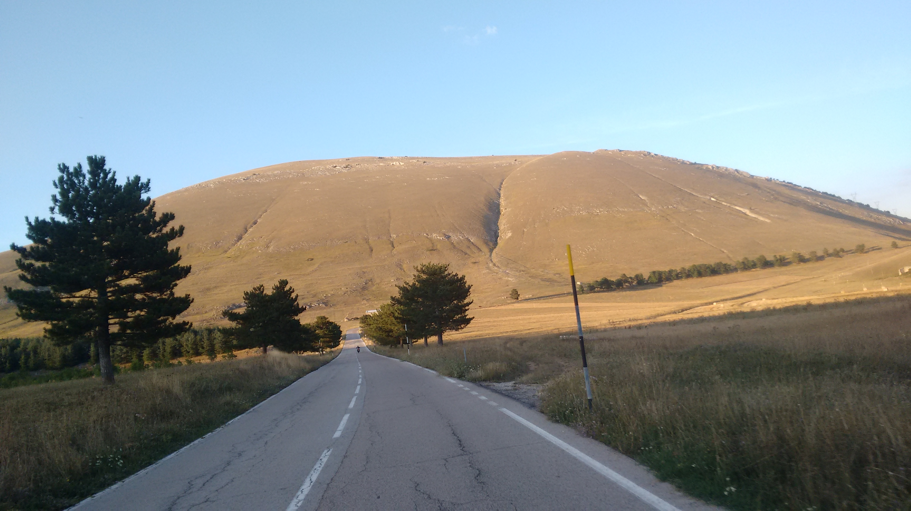
Montagna & parchi
Gran Sasso, Maiella e natura dell’entroterra.
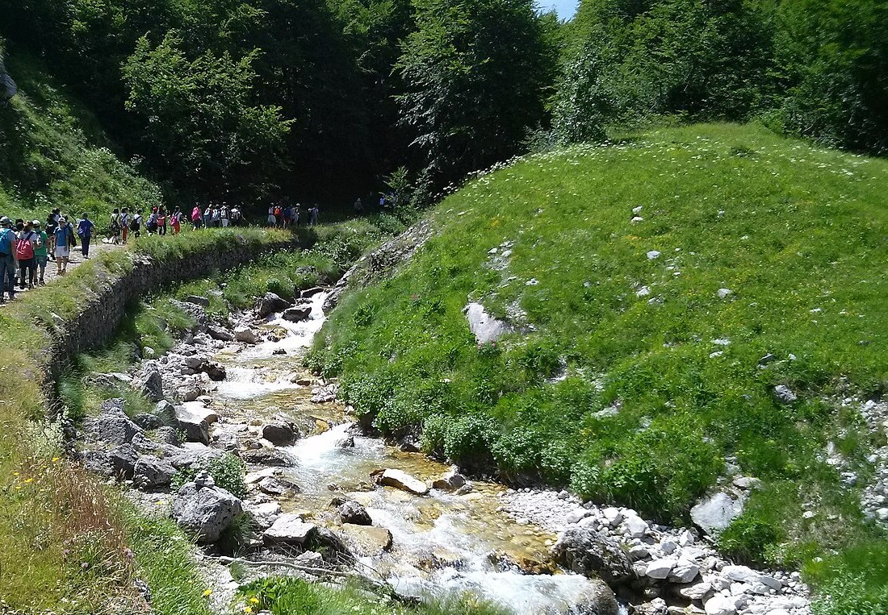
Trekking & MTB
Sentieri, cammini e percorsi in bici.
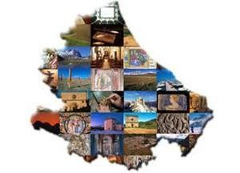
Itinerari misti
Percorsi combinati per chi vuole “un po’ di tutto”.
Nota: alcuni temi sono in costruzione e verranno completati progressivamente.